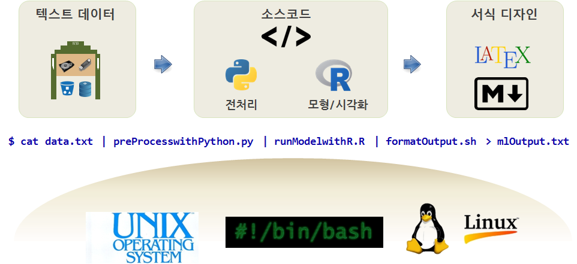

데이터 과학
유닉스 철학과 파이프라인
학습 목표
- 유닉스 철학을 이해한다.
- 데이터과학 작업 파이프라인을 이해한다.
- 유닉스 철학에 따른 R스크립트 위치를 이해하다.
1. 유닉스 철학과 RScript

통계 예측모형, 기계학습, 딥러닝 시스템을 개발할 경우 유닉스/리눅스 운영체제로 환경을 통일하고 텍스트 파일을 모든 프로그램과 시스템이 의사소통하는 기본 인터페이스로 잡고, 이를 파이프로 연결한다.
- 텍스트 데이터로 분석에 사용될 혹은 훈련데이터로 준비한다.
- 파이썬 혹은 쉘스크립트, R스크립트를 활용하여 전처리한다.
- R
caret혹은 파이썬Scikit-learn예측모형을 적합, 기계학습 훈련, 시각화를 수행한다. - 마크다운(웹), LaTeX(조판) 출력형식에 맞춰 서식을 결정한다.
- 최종 결과를 텍스트, 이미지 파일, pdf, html로 출력한다.
$ cat data.txt | preProcesswithPython.py | runModelwithR.R | formatOutput.sh > mlOutput.txt